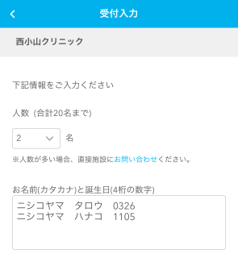

平素より西小山クリニックをご愛顧いただきありがとうございます。2018年から予約制で診療を行なってきた中で、予約が取りにくい問題に様々な対処をしてきました。しかしこの度、必要な人に医療が提供できない状態に到達したと判断し、2025年2月3日（月）から新しい順番制を導入することにいたしました。
順番制に切り替えれば、たった今診察を受けたい状態の方が順番を取ることになります。したがって、本当に医療が必要な人が受診しやすくなり、受診忘れも起こりにくくなります。また隙間時間が生じにくくなるため受診できる人数は増えると考えられます。
オンラインで順番が取れるサービスAir Waitを利用します。ただし、ワクチンについては薬剤の確保が必要なため、9:00と15:00に予約制で行います。また、オンライン診療は引き続き日時予約で行います。午前は9:30、午後は15:30から順番が取得できるようになります。午前中に午後の順番を取ったり、午後に翌日の順番を取ったりすることはできません。
順番を取得する方法にはオンライン、直接来院、電話の3つがあります。
当院のホームページからオンラインで順番が取れます。午前9:30、午後15:30になると、まず直接来院されている方3名が先に順番を取れ、その後からオンラインで順番が取れるようになります。このような設定になっているのは、オンラインで最初の順番が取得できても、すぐには来院できないためです。
「順番待ち受付をする」ボタンをタップし、ご自身のメールアドレスを入力すると、メールが届きます。メールの中の順番を取るためのリンクを開き、受診される人数を選択します。自由メモ欄にお名前をカタカナで入力し、誕生日を4桁の数字で入力してください（誕生日が4月10日であれば、0410）。複数人の場合は改行して列挙してください。

お名前の記入がない場合は誤入力と考えキャンセルする場合があります。人数に変更がある場合は、お早めにお電話あるいは来院してお知らせください。オンライン順番ページを見ると、あと何人でご自身の番になるかが確認できます。また、診療の順番が近づいてくると呼び出しメールが届きますので、なるべく早くご来院ください。院内でお待ちの方には呼び出しメールは原則届きません。
受付に設置されたタブレットで順番が取れます。順番が印字された紙が２枚発行されますので、1枚はお持ちいただき、もう1枚にはお名前と誕生日を記入して受付にお渡しください。来院された方が多い場合は列を作って順次順番を取得していただきます。そのまま待合室でお待ちいただくことができますが、もし外出して後で戻られる場合は受付にお声かけください。
午前は9:30から11:30まで、午後は15:30から17:30までにお電話ください。お名前と誕生日をお伝えください。何番目になるかお伝えしますので、お忘れにならないようにしてください。現在診療中の方の番号がホームページに表示されますので、参考にしてご来院ください。電話による順番取得は、通話中など、すぐに順番をお取りできない場合がありますので、可能な方はオンラインによる順番取得をご利用ください。
1.2.3.いずれの場合も、来院時受付に番号とお名前をお伝えください。お声をかけていただかないと、院内にいらっしゃることがわからないので診察にお呼びすることができません。必要に応じて保険証や医療証の提示、マイナンバーカードによる資格確認も行ってください。
以前順番制だったときは来院された方全員を診療しておりましたので、夜遅くまで診療が続くことが多く、職員や関連業者が対応しきれない状態になってしまいました。そこで、新しい順番制では診療時間内に終わるよう、受付可能な人数を制限します。直近の一人当たりの平均診察時間から、受付可能人数が決まります。受診を希望される人数が多いほど、早い時刻で受付が終了になりますので、お気をつけください。直接来院された場合も、受付可能人数を超えている場合はお帰りいただくことになります。オンライン順番をご利用いただくと、来院せずに順番取得の可否がわかります。受付が終了してしまった場合は次の診療時間内で順番をお取りください。受診可能な人数をなるべく増やすための施策ですので、患者さんのお仕事や学校等のご都合に合わせることは難しくなっております。特定の時刻での診療をご希望の場合はオンライン診療をご検討ください。